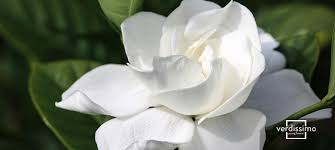

DATOS CURIOSOS
Las flores blancas, aunque comunes, son ricas en simbolismo y curiosidades. Representan pureza, inocencia y paz, y son populares en bodas y conmemoraciones. Además, muchas flores blancas, como las hortensias y margaritas, atraen a insectos beneficiosos para el jardín.
Datos curiosos sobre las flores blancas:
Simbolismo: Las flores blancas, especialmente las rosas, son un símbolo de pureza y amor incondicional. En la cultura cristiana, las rosas blancas representan la pureza de la Virgen María.
Diversidad: A pesar de su color, las flores blancas son muy diversas, incluyendo rosas, lirios, orquídeas, margaritas y mucho más. Atracción de insectos:
Muchas flores blancas atraen a abejas, mariposas y otros insectos beneficiosos para el jardín.
Efecto en la percepción: El color blanco se asocia con la luz y la pureza, lo que puede crear una sensación de paz y tranquilidad en el entorno.
Las flores blancas nocturnas: Las flores blancas que florecen en la noche suelen tener olores fuertes y dulces para atraer a polinizadores nocturnos, como las polillas.
Mitos y leyendas: Algunas flores blancas, como las rosas, están rodeadas de mitos y leyendas. Por ejemplo, se cree que las rosas blancas se transformaron en rojas al ruborizarse por un beso.
Uso en medicina tradicional:
Algunas flores blancas, como las de la planta "aliso dulce", se han utilizado en medicina tradicional para tratar diversas dolencias.
Atracción de polinizadores: Las flores blancas, con su color brillante y aroma, son muy atractivas para los polinizadores, como las abejas y las mariposas.
Control de plagas: Algunas flores blancas, como las de la planta "aliso dulce", atraen insectos beneficiosos que ayudan a controlar plagas en los cultivos. Simbolismo en diferentes culturas:
El color blanco y las flores blancas tienen diferentes significados en diferentes culturas. Por ejemplo, en la cultura occidental, las flores blancas suelen asociarse con la pureza, mientras que en algunas culturas orientales, pueden simbolizar la muerte.
Flores blancas y jardinería: Las flores blancas son muy populares en la jardinería debido a su capacidad para complementar otros colores y crear un ambiente relajante y elegante.
